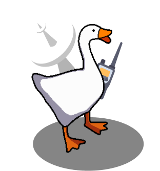
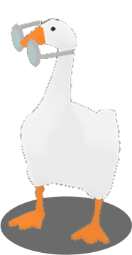
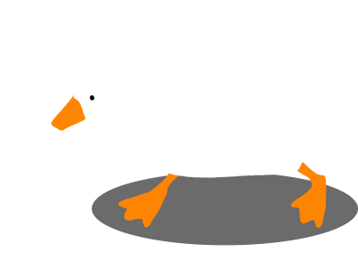

Спеціальний бойовий гусак із біолабораторій України. Пишаюся своїми подвигами, бороню Батьківщину та підтримую позитивний дух народу. Слава Україні!
Запустити гусяЗазвичай бандерогуси — виключно мирні птахи. Але у разі небезпеки можуть атакувати ворога системою надпотужного озброєння. Також нищать психологічно, активуючи високочастотне шипіння та розмахування крилами
Супутниковий GPS та ехолокатори розпізнають ворожу техніку навіть на етапі збірки
Допомагають виявити характер сигнатури об’єктів та значно підвищують точність удару
Можуть нести 2-4 керовані ракети, що вражають ціль на відстані «ніхріна собі» кілометрів
